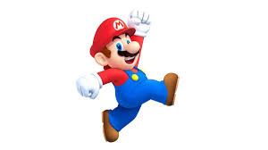
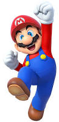
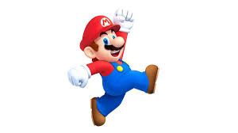
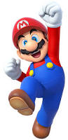

HI, I AM MARIO
Super Mario[a] is a series of fantasy platform games created by Nintendo featuring their mascot, Mario. Alternatively called the Super Mario Bros.[b] series or simply the Mario[c] series, it is the central series of the greater Mario franchise. At least one Super Mario game has been released for every major Nintendo video game console. The Super Mario games follow Mario's adventures, typically in the fictional Mushroom Kingdom with Mario as the player character. He is often joined by his brother, Luigi, and occasionally by other members of the Mario cast. As in platform video games, the player runs and jumps across platforms and atop enemies in themed levels. The games have simple plots, typically with Mario rescuing the kidnapped Princess Peach from the primary antagonist, Bowser. The first title in the series, Super Mario Bros., released for the Nintendo Entertainment System (NES) in 1985, established gameplay concepts and elements prevalent in nearly every Super Mario game since. These include a multitude of power-ups and items that give Mario special magic powers such as fireball-throwing and size-changing into giant and miniature sizes.[1] Shigeru Miyamoto created Mario while developing Donkey Kong in an attempt to produce a best-selling video game for Nintendo; previous titles like Sheriff had not achieved the same success as titles like Pac-Man. Originally, Miyamoto wanted to create a video game that used the characters Popeye, Bluto, and Olive Oyl.[3] At the time, however, Miyamoto was unable to acquire a license to use the characters (and would not until 1982 with Popeye), so he ended up making an unnamed player character, Donkey Kong, and Lady (later known as Pauline).[3] In the early stages of Donkey Kong, Mario was unable to jump, and the focus was to escape a maze. However, Miyamoto enabled Mario to jump, saying "If you had a barrel rolling towards you, what would you do?"[4][5] While the protagonist was unnamed in the Japanese release, he would be named Jumpman in the game's English instructions[6] and Mario in the sales brochure.[7] Miyamoto originally named the character "Mr. Video", and he was to be used in every video game Miyamoto developed.[8] According to a widely circulated story, during localization of Donkey Kong for American audiences, Nintendo of America's warehouse landlord Mario Segale confronted then-president Minoru Arakawa, demanding back rent. Following a heated argument in which the Nintendo employees eventually convinced Segale he would be paid, they opted to name the character in the game Mario after him.[9][10] Miyamoto commented that if he had named Mario "Mr. Video", Mario likely would have "disappeared off the face of the Earth".[5] By Miyamoto's own account, Mario's profession was chosen to fit with the game design. Since Donkey Kong was set on a construction site, Mario was made into a carpenter. When he appeared again in Mario Bros., it was decided he should be a plumber, since a lot of the game is played in underground settings.[11] Mario's character design, particularly his large nose, draws on western influences; once he became a plumber, Miyamoto decided to "put him in New York" and make him Italian,[11] lightheartedly attributing Mario's nationality to his mustache.[12] Other sources have Mario's profession chosen to be carpenter in an effort to depict the character as an ordinary hard worker, and make it easier for players to identify with him.[13] After a colleague suggested that Mario more closely resembled a plumber, Miyamoto changed Mario's profession accordingly and developed Mario Bros.,[3] featuring the character in the sewers of New York City.[14] Due to the graphical limitations of arcade hardware at the time, Miyamoto clothed the character in red overalls and a blue shirt to contrast against each other and the background. A red cap was added to let Miyamoto avoid drawing the character's hairstyle, forehead, and eyebrows, as well as to circumvent the issue of animating his hair as he jumped.[3][11] To give distinctly human facial features on an 8×8 pixel head, Miyamoto drew a large nose and a mustache, which avoided the need to draw a mouth and facial expressions.[15] Miyamoto envisioned a "go to" character that could be put into any game as needed, albeit in cameo appearances, as at the time Miyamoto was not expecting the character to become singularly popular.[8] To this end, he originally called the character "Mr. Video", comparing his intent for appearances in later games to the cameos that Alfred Hitchcock had done within his films.[16] Over time, Mario's appearance has become more defined; blue eyes, white gloves, brown shoes, a red "M" in a white circle on the front of his hat and gold buttons on his overalls have been added. The colors of his shirt and overalls were also reversed from a blue shirt with red overalls to a red shirt with blue overalls. Miyamoto attributed this process to the different development teams and artists for each game as well as advances in technology.
 


